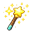

이번 달 집중
오늘
일 평균
목표까지 하루
집중한 날
누적 집중 시간
실제
목표 페이스
카테고리
이 달에는 아직 기록이 없어요.

Slack 집중요정 홈 탭 → 크롬 익스텐션 연결 버튼이나 /settings extension 으로 토큰을 발급받아 붙여넣어 주세요.
Slack 채널에서 /start 를 한 번 하면 그 채널을 여기서 고를 수 있어요. 지금은 기록만 돼요.
오늘은 아직 아무도 시작하지 않았어요.
왼쪽에서 워크스페이스를 먼저 연결해주세요.
이번 달 집중
오늘
일 평균
목표까지 하루
집중한 날
이 달에는 아직 기록이 없어요.